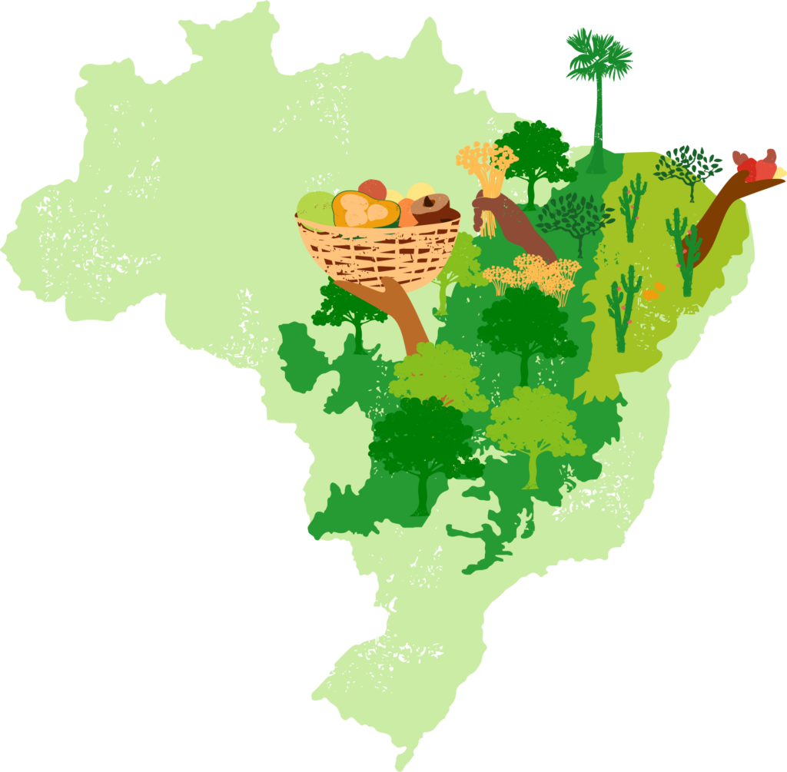
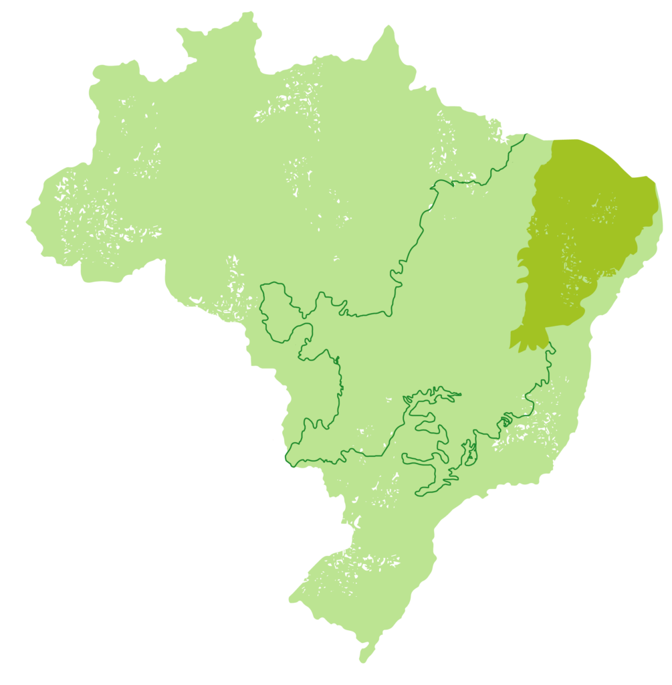
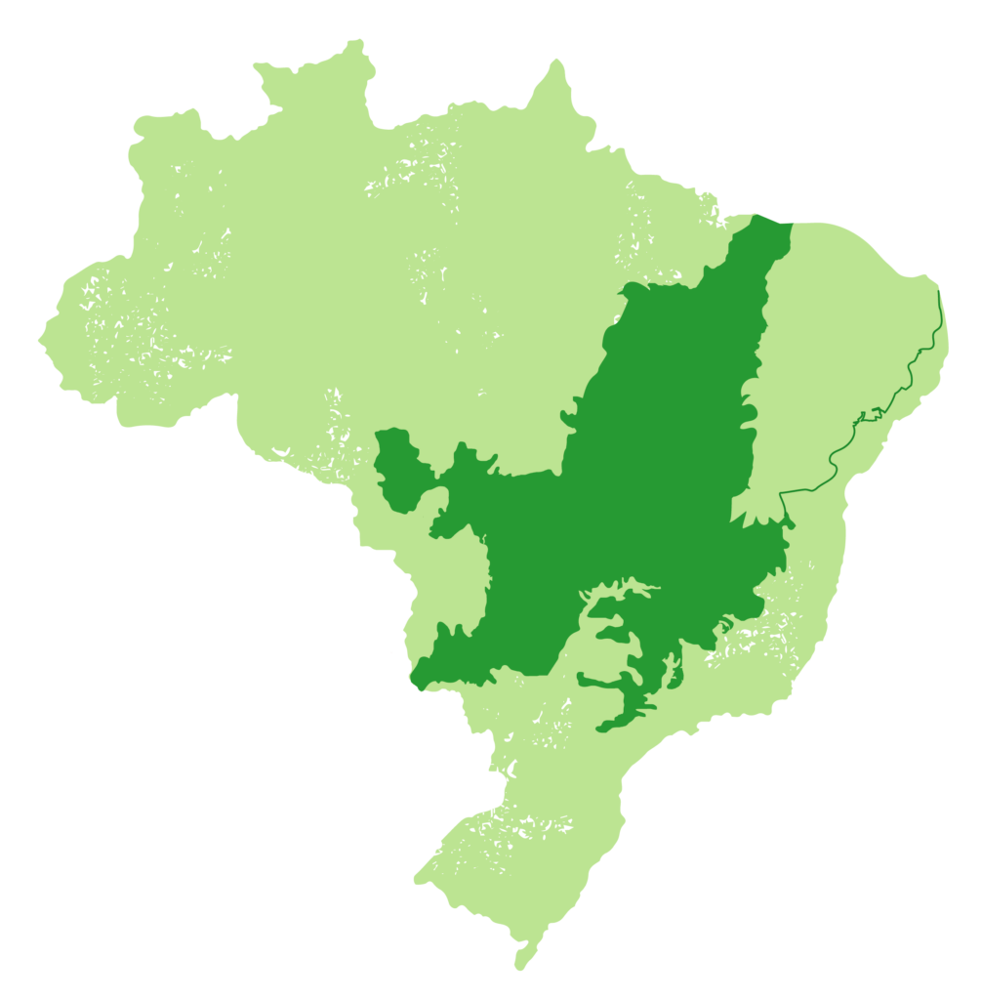

O mandacaru (Cereus jamacaru), uma planta nativa da Caatinga que apresenta grande capacidade de adaptação às condições de seca e às altas temperaturas. Sua capacidade de captar e armazenar água permite que sobreviva durante longos períodos de estiagem, tornando-o uma espécie importante para o equilíbrio dos ecossistemas e para as comunidades que vivem nessa região.

A adaptação à Caatinga ocorre em um ambiente marcado pela baixa disponibilidade de água. Nesse contexto, o mandacaru possui características que permitem sua sobrevivência mesmo durante períodos de seca. Segundo a Embrapa, as cactáceas desenvolveram adaptações ao ambiente árido, onde a água é um dos principais fatores limitantes. Entre essas características está a capacidade de armazenar água nos tecidos. Além disso, o caule e os espinhos ajudam na adaptação às condições do ambiente. Dessa forma, o mandacaru é um exemplo de adaptação vegetal ao clima semiárido.

Como o mandacaru vive no Cerrado?
Ocorrência: O mandacaru consegue viver em solos secos e rochosos, presentes no Cerrado rupestre e em áreas mais secas.
Aparência: Cresce em formato de candelabro e pode chegar a cerca de 6 metros. Seus caules verdes possuem costelas e espinhos.
Sobrevivência: Seu caule armazena água, e o metabolismo CAM ajuda a economizá-la. Essas adaptações permitem sua sobrevivência durante a estiagem.
Ecologia: Suas flores brancas abrem à noite e atraem morcegos e mariposas, que ajudam na polinização. Seus frutos também servem de alimento para animais.
